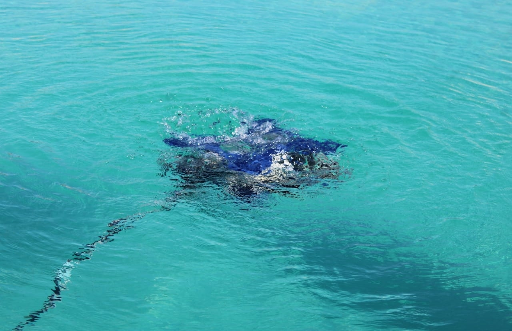
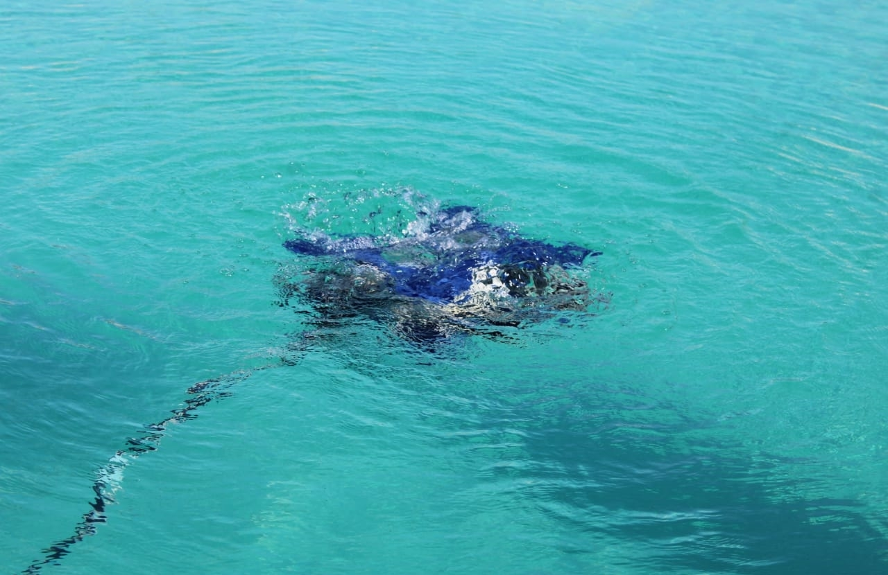
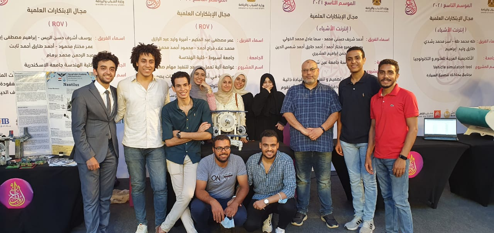
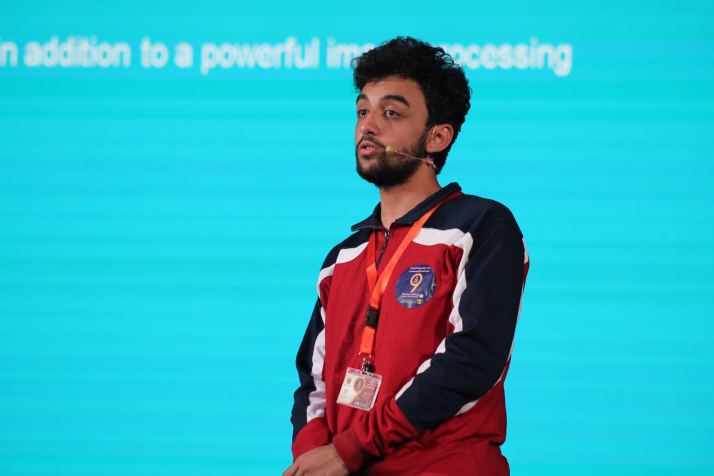
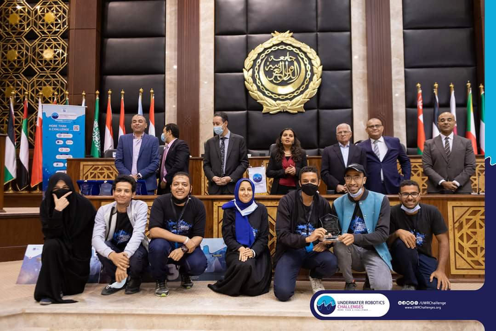

An underwater ROV is a robotic vehicle that can go from the water surface to deep oceans and is used to observe and complete tasks by the ROV user. You can usually spot an ROV because of its design; they have multiple propeller thrusters pointing in various directions. The configuration of the thrusters allow the ROV to be controlled to stay in a fixed position which allows it to visually inspect or to carry out work using its gripper. Underwater ROVs also have a tether (an electrical cable) that connects them to the surface or wherever the control station is located.
 

Since 2015 we started participating in Mate ROV competition and got 13th in our first time, year after year our generations continued developing the ROV and managed to win 13th in 2016 and 4th place in 2017 which was a major step. In 2018 we won 11th place and "No Pain, No Gain" Award and then decided to push it even further and spend more time developing so we skipped 2019 and joined the 2020 edition, but due to Covid-19 the competition was cancelled. Later that year another competition started which is UWR Challenges, so we decided to participate and we won 6th place, "Best Presentation" Award and one of our team members (Amira Waleed) won "Best effective Wavemaker" Award. We didn't stop there, and in 2021 we decided to join a new competition "إبداع" the 9th edition, the technology and ROV field, and we managed to win 2nd place in Egypt. This year we are participating in Mate ROV 2022, and the competition will be held on 18-20 of May. We're hoping our team will be able to exceed our expectations and lead us to to the international Competition in California, USA.
  